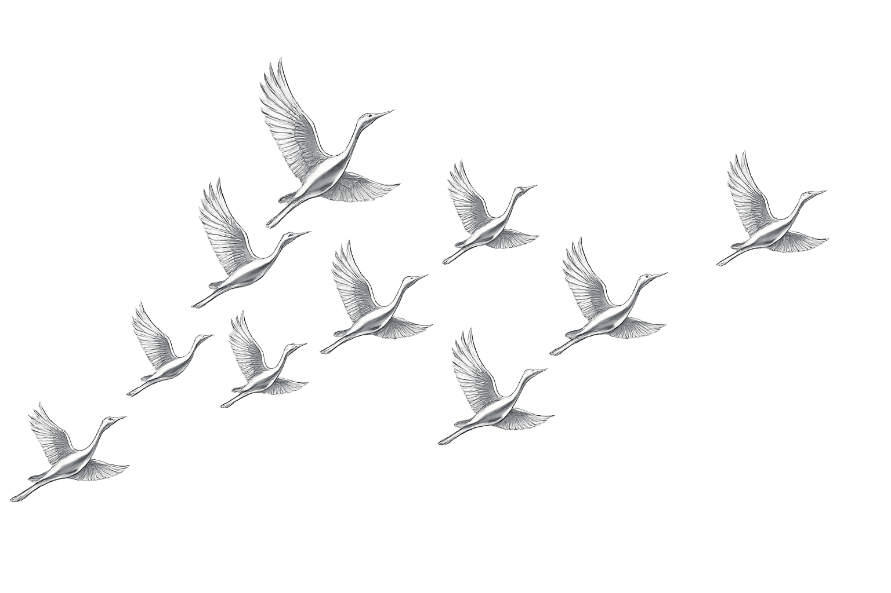
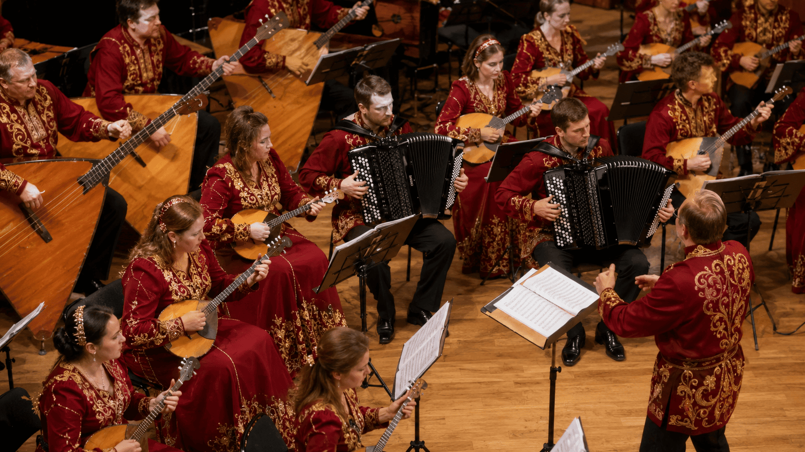

Каталог
Оркестры народных инструментов
Оркестры русских народных инструментов, домр, балалаек, баянов и гармоник.

Оркестр народных инструментовНациональный академический оркестр народных инструментов России имени Н. П. Осипова
Москва · Москва
Подробнее → Оркестр народных инструментовАкадемический оркестр русских народных инструментов имени Н. Н. Некрасова
Москва · Москва
Подробнее → Оркестр народных инструментовГосударственный академический русский оркестр имени В. В. Андреева
Санкт-Петербург · Санкт-Петербург
Подробнее → Оркестр народных инструментовОркестр русских народных инструментов «Метелица»
Санкт-Петербург · Санкт-Петербург
Подробнее → Оркестр народных инструментовКонцертный оркестр русских народных инструментов «Перезвоны»
Санкт-Петербург / Пушкин · Санкт-Петербург / Пушкин
Подробнее → Оркестр народных инструментовГосударственный академический русский концертный оркестр «Боян»
Москва · Москва
Подробнее → Оркестр народных инструментовОркестр русских народных инструментов «Онего» Карельской государственной филармонии
Петрозаводск, Республика Карелия · Петрозаводск, Республика Карелия
Подробнее → Оркестр народных инструментовОркестр русских народных инструментов имени Е. М. Тришина Калужской областной филармонии
Калуга · Калуга
Подробнее → Оркестр народных инструментовОркестр русских народных инструментов Пермской краевой филармонии / имени Б. М. Салина
Пермь · Пермь
Подробнее → Оркестр народных инструментовОркестр русских народных инструментов «ДОН» Ростовской государственной филармонии
Ростов-на-Дону · Ростов-на-Дону
Подробнее → Оркестр народных инструментовОркестр русских народных инструментов имени Н. Н. Калинина Волгоградской областной филармонии
Волгоград · Волгоград
Подробнее → Оркестр народных инструментовРусский оркестр Белгородской государственной филармонии
Белгород · Белгород
Подробнее → Оркестр народных инструментовГосударственный русский народный оркестр «Малахит» Челябинской государственной филармонии
Челябинск · Челябинск
Подробнее → Оркестр народных инструментовГосударственный оркестр народных инструментов Республики Татарстан
Казань, Республика Татарстан · Казань, Республика Татарстан
Подробнее → Оркестр народных инструментовНациональный оркестр народных инструментов Республики Башкортостан
Уфа, Республика Башкортостан · Уфа, Республика Башкортостан
Подробнее → Оркестр народных инструментовГосударственный оркестр народных инструментов «Марий кундем» им. С. Элембаева
Йошкар-Ола, Республика Марий Эл · Йошкар-Ола, Республика Марий Эл
Подробнее → Оркестр народных инструментовОркестр народных инструментов «Золотая мелодия» Удмуртской государственной филармонии
Ижевск, Удмуртская Республика · Ижевск, Удмуртская Республика
Подробнее → Оркестр народных инструментовЯрославский оркестр русских народных инструментов «Струны Руси»
Ярославль · Ярославль
Подробнее → Оркестр народных инструментовОркестр русских народных инструментов «Тула» Тульской областной филармонии
Тула · Тула
Подробнее → Оркестр народных инструментовКрасноярский филармонический русский оркестр имени А. Ю. Бардина
Красноярск · Красноярск
Подробнее → Оркестр народных инструментовРусский академический оркестр Новосибирской государственной филармонии
Новосибирск · Новосибирск
Подробнее → Оркестр народных инструментовГубернаторский оркестр русских народных инструментов Филармонии Кузбасса
Кемерово · Кемерово
Подробнее → Оркестр народных инструментовРусский оркестр Хабаровской краевой филармонии
Хабаровск · Хабаровск
Подробнее → Оркестр народных инструментовРусский оркестр Тольяттинской филармонии
Тольятти, Самарская область · Тольятти, Самарская область
Подробнее → Оркестр народных инструментовНижегородский русский народный оркестр им. В. А. Кузнецова
Нижний Новгород · Нижний Новгород
Подробнее → Оркестр народных инструментовУльяновский государственный оркестр русских народных инструментов «Губернаторский»
Ульяновск · Ульяновск
Подробнее → Оркестр народных инструментовГосударственный оркестр русских народных инструментов «Золотые струны» Филармонии Якутии
Якутск, Республика Саха (Якутия) · Якутск, Республика Саха (Якутия)
Подробнее → Оркестр народных инструментовГосударственный оркестр народных инструментов Республики Дагестан
Махачкала, Республика Дагестан · Махачкала, Республика Дагестан
Подробнее → Оркестр народных инструментовГосударственный оркестр русских народных инструментов «Русская удаль» имени А. В. Шипитько
Майкоп, Республика Адыгея · Майкоп, Республика Адыгея
Подробнее → Оркестр народных инструментовНациональный государственный оркестр народных инструментов РСО-Алания имени Булата Газданова
Владикавказ, Республика Северная Осетия - Алания · Владикавказ, Республика Северная Осетия - Алания
Подробнее → Оркестр народных инструментовОркестр чеченских народных инструментов Чеченской государственной филармонии имени А. Шахбулатова
Грозный, Чеченская Республика · Грозный, Чеченская Республика
Подробнее → Оркестр народных инструментовОркестр народных инструментов Государственной филармонии имени А. Хамхоева
Республика Ингушетия · Республика Ингушетия
Подробнее → Оркестр народных инструментовНациональный оркестр Калмыкии
Элиста, Республика Калмыкия · Элиста, Республика Калмыкия
Подробнее → Оркестр народных инструментовНациональный арт-фолк оркестр «Морденс» Мордовской государственной филармонии
Саранск, Республика Мордовия · Саранск, Республика Мордовия
Подробнее → Оркестр народных инструментовАлтайский государственный оркестр русских народных инструментов «Сибирь» имени Е. И. Борисова
Барнаул, Алтайский край · Барнаул, Алтайский край
Подробнее → Оркестр народных инструментовГосударственный оркестр Республики Алтай
Горно-Алтайск, Республика Алтай · Горно-Алтайск, Республика Алтай
Подробнее → Оркестр народных инструментовТувинский национальный оркестр
Кызыл, Республика Тыва · Кызыл, Республика Тыва
Подробнее → Оркестр народных инструментовНациональный оркестр Республики Бурятия театра «Байкал»
Улан-Удэ, Республика Бурятия · Улан-Удэ, Республика Бурятия
Подробнее → Оркестр народных инструментовИркутский русский оркестр / Иркутский филармонический русский оркестр
Иркутск · Иркутск
Подробнее → Оркестр народных инструментовКостромской государственный оркестр народных инструментов
Кострома · Кострома
Подробнее → Оркестр народных инструментовОркестр русских народных инструментов имени В. Г. Бабанова Новгородской областной филармонии
Великий Новгород · Великий Новгород
Подробнее → Оркестр народных инструментовОркестр русских народных инструментов «Полярис»
Мурманск · Мурманск
Подробнее → Оркестр народных инструментовОркестр русских народных инструментов имени В. М. Махова Астраханской государственной филармонии
Астрахань · Астрахань
Подробнее → Оркестр народных инструментовРусский оркестр Бурятской государственной филармонии
Улан-Удэ, Республика Бурятия · Улан-Удэ, Республика Бурятия
Подробнее → Оркестр народных инструментовГубернаторский академический оркестр русских народных инструментов Вологодской областной филармонии
Вологда / Череповец · Вологда / Череповец
Подробнее → Оркестр народных инструментовОркестр русских народных инструментов имени В. Гридина Курской государственной филармонии
Курск · Курск
Подробнее → Оркестр народных инструментовСмоленский русский народный оркестр имени В. П. Дубровского
Смоленск · Смоленск
Подробнее → Оркестр народных инструментовИвановский оркестр русских народных инструментов Ивановской государственной филармонии
Иваново · Иваново
Подробнее → Оркестр народных инструментовВятский оркестр русских народных инструментов имени Ф. И. Шаляпина
Киров · Киров
Подробнее → Оркестр народных инструментовОркестр русских народных инструментов «Россияне» / Тамбовская концертная организация
Тамбов · Тамбов
Подробнее →